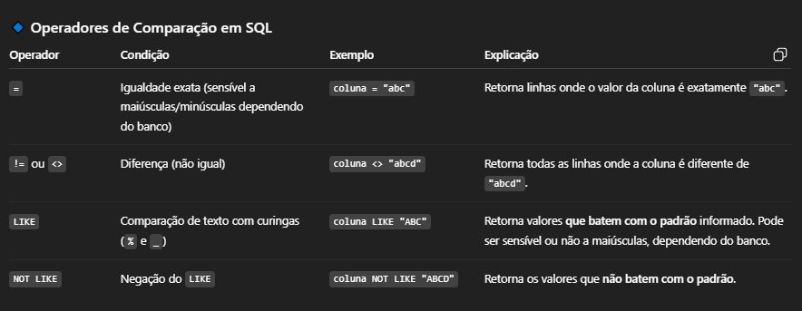
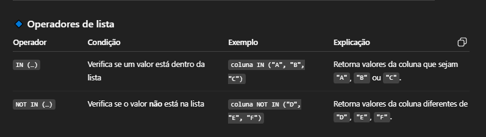
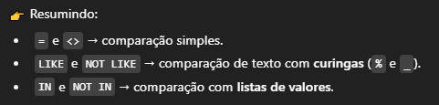
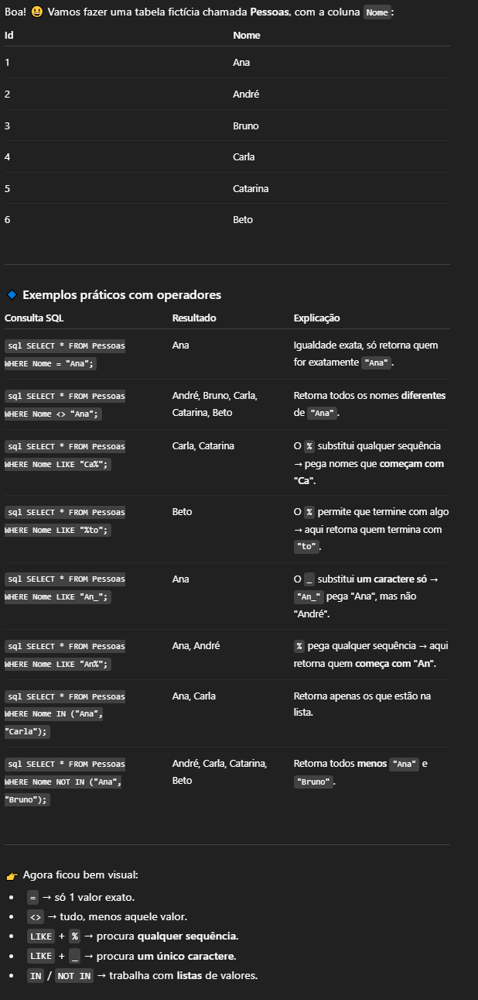

RESUMO E ANOTAÇÕES
- * = termo para colunas em geral
- SELECT = seleciona a coluna que queremos
- FROM = usado para referenciar qual tabela iremos extrair os dados
- WHERE = condição ( ONDE ), que podemos usar para colocar condições na pesquisa
- LIKE = Usado para procurar qualquer sequência sendo ela numerica ou alfabetica
- LIKE "% X %" = sequencia aonde ambos os caracteres podem ser qualquer um
- LIKE "X_" = procura por um unico caracter (que começe com ele)
- NOT LIKE = negação do like, tudo que for exceto oque esta dentro do like
- NOT LIKE "% X %"
- NOT LIKE "X_"
- BETWEEN = uma atribuição que compara um intervalo de valores
- NOT BETWEEN
- IN = usado quando é desejado valores especificos
- NOT IN
- AND
- OR
- ORDER BY = cada linha é classificada alfanumericamente com base no valor da coluna especificada.
- ASC = crescente
- DESC = decrescente
- DISTINCT = palavra-chave removerá cegamente linhas duplicadas.
- LIMIT = cláusula reduzirá o número de linhas a serem retornadas.
- OFFSET = especificará onde começar a contagem do número de linhas.
CONSULTAS SELECT
SELECT
Para consultarmos um coluna ou mais de uma table usamos os seguintes comandos:
- select (nome da coluna) from (nome da tabela)
- select * from nome_tabela = ( * ) seleciona todas as colunas da tabela
CONSULTAS COM RESTRIÇÕES PART 01
WHERE
Para filtrar alguns resultas usamos o WHERE com a sua condição
- SELECT coluna_01, coluna_02 FROM nome_tabela WHERE condição AND/OR column AND/OR ....
| OPERADOR | CONDIÇÃO | SQL EXEMPLO |
|---|---|---|
| =, !=, <, <=, >, >= | Operadores numéricos padrão | nome_coluna != 4 |
| BETWEEN ... AND | O número está dentro do intervalo de dois valores (inclusive) | col_name BETWEEN 1.5 AND 10.5 |
| NOT BETWEEN … AND | O número não está dentro do intervalo de dois valores (inclusive) | col_name NOT BETWEEN 1 AND 10 |
| IN (…) | O número existe em uma lista | col_name IN (2, 4, 6) |
| NOT IN (…) | O número não existe em uma lista | col_name NOT IN (1, 3, 5) |
Exemplos:
- SELECT * (todas colunas) FROM nomeTabela WHERE colunaAno <= 5
- resultado: (0, 1, 2, 3, 4, 5)
- SELECT * (todas colunas) FROM nomeTabela WHERE colunaIdade BETWEEN 3 AND 5
- resultado: (3, 4, 5)
- SELECT * (todas colunas) FROM nomeTabela WHERE colunaIdade NOT BETWEEN 1 AND 5
- resultado: (6, 7, 8, 9 ....)
- SELECT * (todas colunas) FROM nomeTabela WHERE colunaIdade IN (12, 15, 18)
- resultado: (12, 12, 15, 15 ,15 ,18)
CONSULTAS COM RESTRIÇÕES PART 02
  Exemplos:
Filtrando e classificando resultados de consulta
DISTINCT
Usado logo após o SELECT, ele serve para eliminar conteudos duplicados
Exemplo:
SELECT DISTINCT nome_coluna FROM nome_tabela
OFFSET
Usado para delimitar em que linha a pesquisa se iniciará
Exemplo:
SELECT nome_coluna FROM nome_tabela OFFSET 5
LIMIT
Usado para limitar quantas linhas irá aparecer no resultado da pesquisa
Exemplo:
SELECT nome_coluna FROM nome_tabela LIMIT 5
ORDER BY (ASC/DESC)
Usado para organizar em ordem alfabetica ou numerica, ASC (crescente) e DESC (decrescente)
Exemplo:
SELECT nome_coluna FROM nome_tabela ORDER BY nome_coluna ASC/DESC
Consultas multitabelas com JOINs
INNER JOIN & ON
Usado para fazer junções de duas tabelas em uma pesquisa.Cláusula em uma consulta, podemos combinar dados de linhas de duas tabelas separadas usando essa chave exclusiva.
Exemplo:
SELECT * FROM movies JOIN boxoffice ON id = movie_id
Junções externas
LEFT JOIN
Exemplo:
RIGHT JOIN
Exemplo:
FULL JOIN
Exemplo: